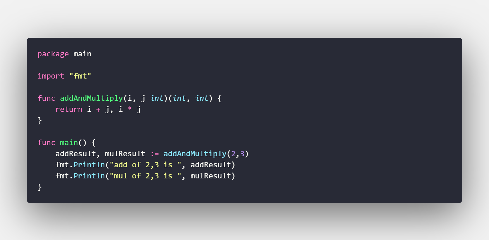
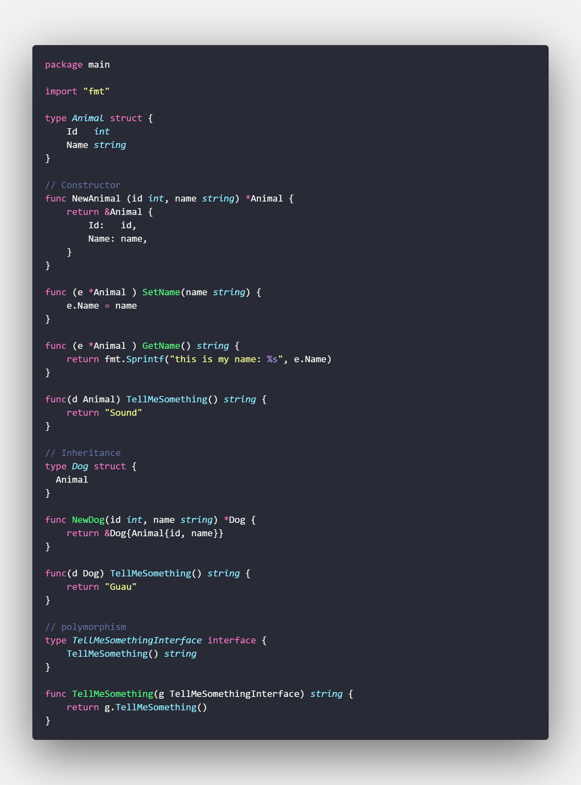

Nivel Avanzado.
En esta sección se encontrara con diferentes funcionalidades mas complejas en cierto modo, del lenguaje de programación GO.
Veremos una introducción al uso y manejo de funciones, programación orientada a objetos y el manejo de archivos, coneción a beses de datos. Entre ellos muchas mas variantes. Happy Hacking
Funciones
Las funciones son conjuntos de sentencias que procesan la entrada y la salida de retorno. En Golang, las funciones se definen utilizando la palabra clave func.
Declaración y Sintaxis basica
En el siguiente ejemplo, creamos una función que imprime "¡Hola mundo!" y luego llamó a la función de la función principal.
Se declara con la palabra clave func posterior el nombre de la funcion y los parentesis donde iran los parametros de la función.
Se limita con llaves el area donde se ejecutaran los diferentes procesos solo para esa función.
Pasando parámetros y valor de retorno
Podemos pasar los parámetros a las funciones como entrada y podemos devolver los valores después del procesamiento como salida de las funciones.
En el siguiente ejemplo, creamos dos funciones, agregar y mul. Ambos toman dos enteros, son parámetros y devuelven un entero como salida.
El valor de retorno se agrega al final del encabezado de la función. Para retornar estos valores se ocupa la palabra reserveda return
NOTA: Tenemos que especificar el tipo de dato que son los parametros y el que devolvera la función en caso de cevolver algún valor.
Omitiendo indicadores de tipos de datos
Si los tipos de datos son los mismos, puede omitirlos, excepto el último en la fila. Podríamos haber escrito add and mul como se muestra a continuación. En el siguiente ejemplo, omite el tipo de datos de i. Se deduce como int del último tipo de datos en la fila, es decir, del tipo de datos de j.
Devolviendo multiples valores
Las funciones pueden devolver múltiples valores como se muestra en el ejemplo. En el siguiente ejemplo, la función addAndMultiply está devolviendo dos enteros como se representa en la firma de la función. El primer valor de retorno es para la suma y el segundo valor de retorno es para la multiplicación

Programación Orientada a Objetos (POO)
En este post, vamos a ver como podemos aplicar POO en Go. La programación orientada a objetos es una herramienta o un paradigma muy versatil y util porque nos permite la reutilización de codigo entre muchas más funcionalidades.
Clases
Como se había mencionado en el apartado anterior, Golang no tiene clases pero si usa structs.
Ahora vamos a agregar variables a nuestras clases.
Como vemos de momento no ha sido tan difícil crear un struct y agregarle variables, que tal si creamos un constructor.
Aquí vamos a notar una pequeña diferencia, como un struct no es una clase, una de las mejores formas que encontré de hacer un constructor es por medio de una función. La función usa un puntero, que en resumen un puntero me permite acceder a la dirección en memoria de otra variable
*Animal: Un * previo a nuestro struct o algún tipo de dato me permite indicar donde vamos a almacenar la información que este caso vamos a devolver
&Animal: un & previo a nuestro struct nos indica que vamos a devolver la referencia ó dirección en memoria de esa nueva varible creada.
En este punto podemos hacer pruebas de como va quedando nuestro objeto animal
En este punto podemos agregar comportamientos para editar el nombre de nuestro objeto
Herencia (Composición)
En GO no existe la herencia como tal, pero vamos a ver como como podemos implementar algo que que nos permite lograr algo similar y es composición.
Probamos el condigo.
Polimorfismo
El polimorfismo consiste en clases heredadas que tienen una misma función con comportamientos diferentes, para un ejemplo vamos a crear una función nueva llamada tellMeSomeThing la cual devolvera un string diferente tanto para la clase Animal como para la clase Dog. Para esto en golang crearemos una función con una interface que llame la función tellMeSomething independientemente de la clase que sea.

Conexion de Bases de Datos (Mysql)
Se muestra una forma basica de como poder conectarnos a una base de datos en especifico Mysql aclarando que el driver que se utiliza puede variar dependiendo del servidor de bases de datos que se utilice adjunto el link donde se pueden ver todos los drives disponibles Drivers
Manejo de Archivos Estaticos
En este apartado vera como puede crear y escribir un archivo de texto plano, pero tambien como leerlo. Se muestra tambien como se lee el contenido de un directorio